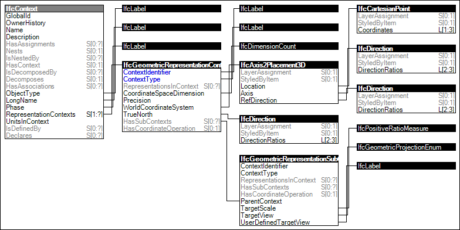

Link to this page
Link to this pageA project representation context indicates the coordinate system orientation, direction of true north, precision, and other values that apply to all geometry within a project or project library. A main geometric representation context is created for 3D model, and 2D representations, both can be further refined using geometric representation sub contexts.
Figure 4 illustrates an instance diagram.
 |
Figure 4 — Project Representation Context |